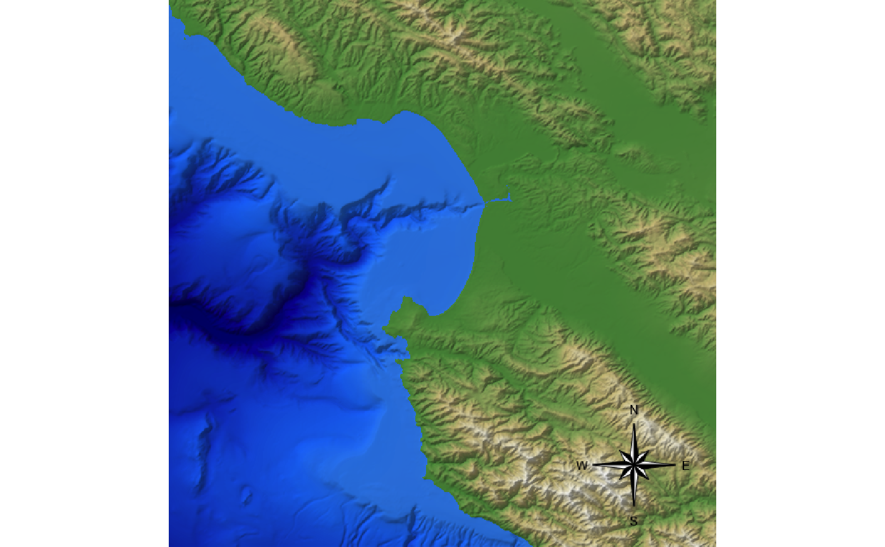
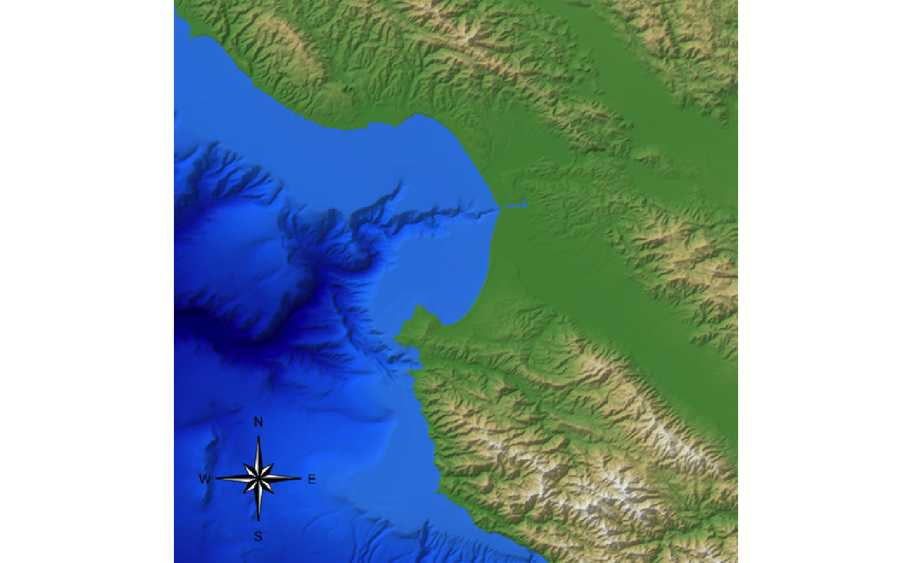
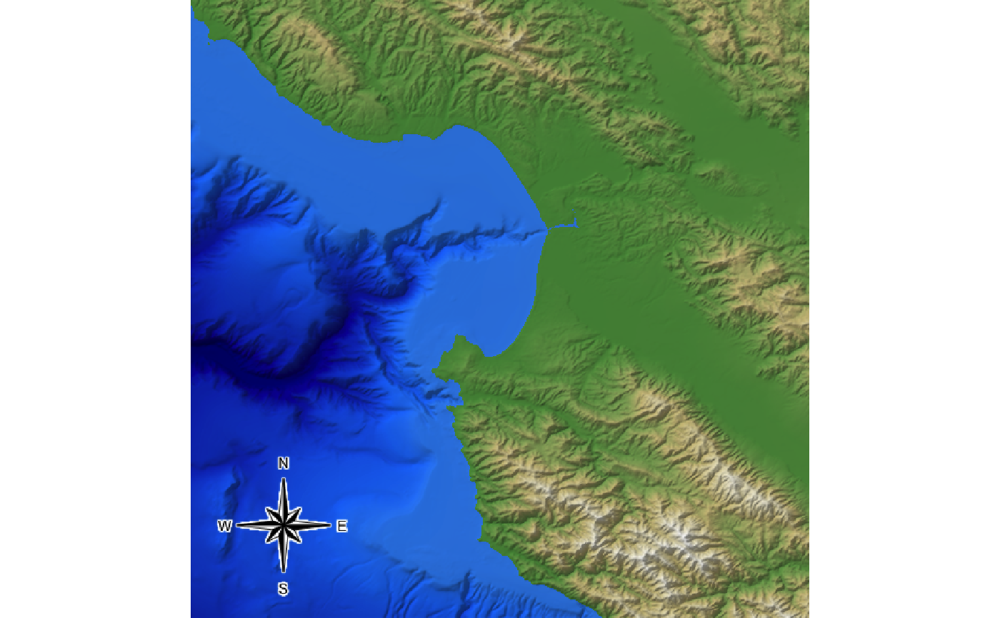
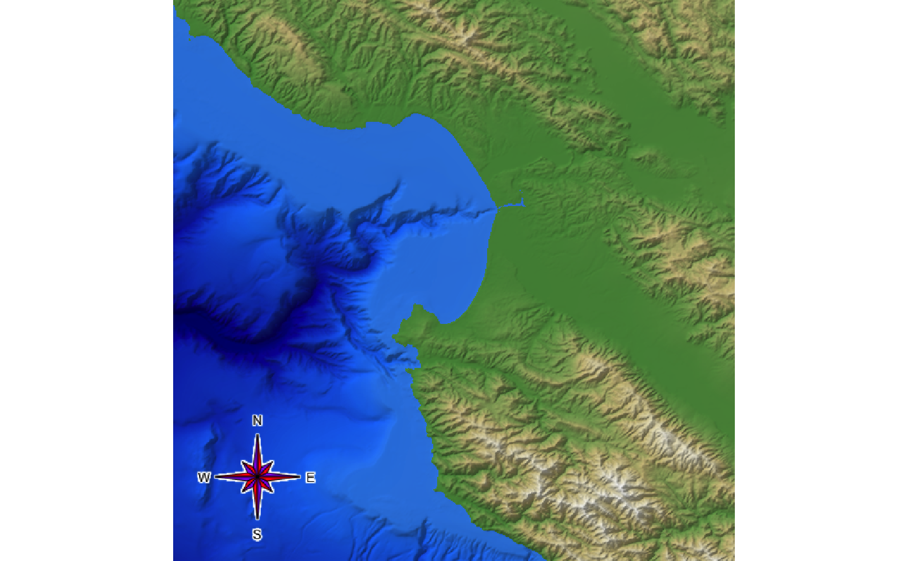
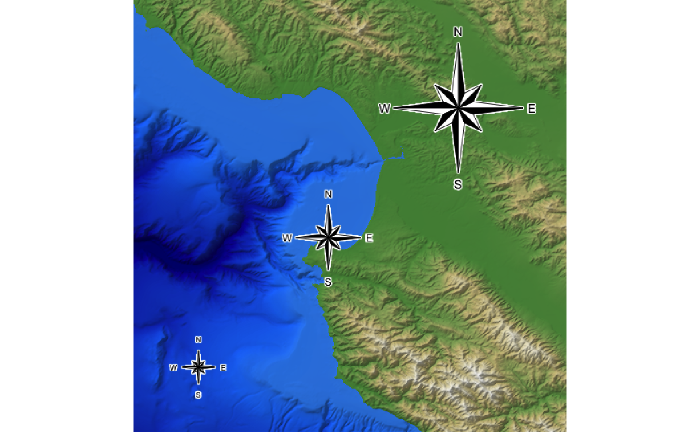
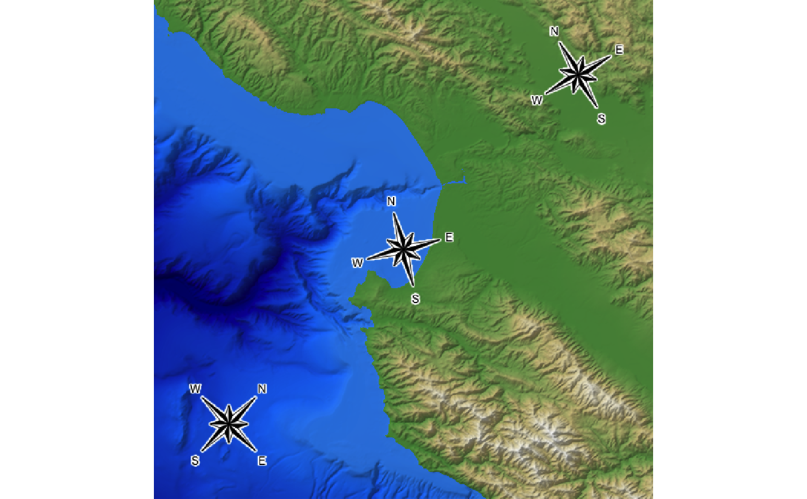
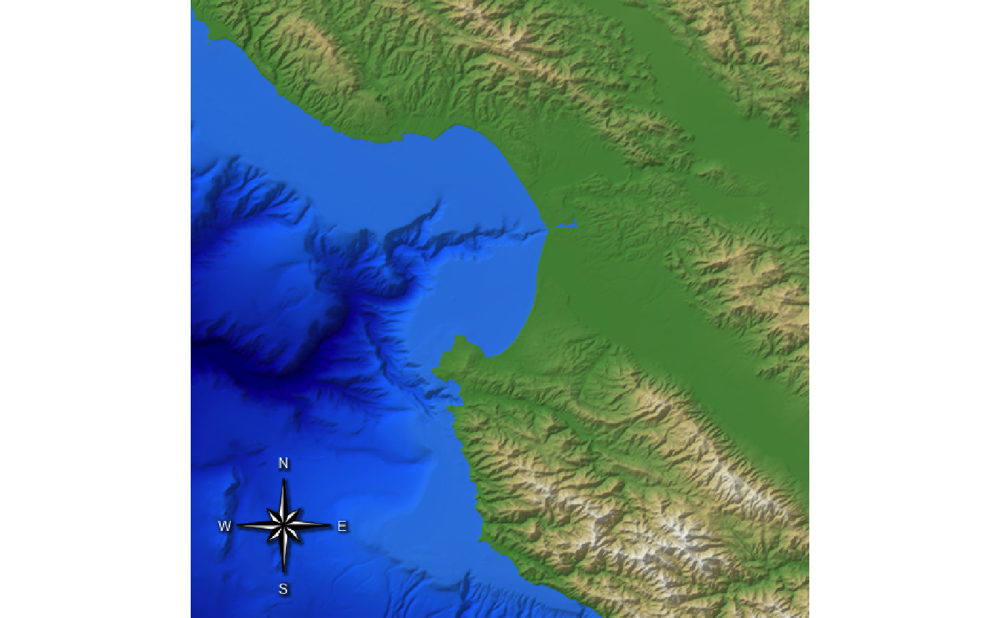

This adds the compass
Based on code from "Auxiliary Cartographic Functions in R: North Arrow, Scale Bar, and Label with a Leader Arrow"
generate_compass_overlay( x = 0.85, y = 0.15, size = 0.075, text_size = 1, bearing = 0, heightmap = NULL, width = NA, height = NA, color1 = "white", color2 = "black", text_color = "black", border_color = "black", border_width = 1, halo_color = NA, halo_expand = 1, halo_alpha = 1, halo_offset = c(0, 0), halo_blur = 1 )
Arguments
| x | Default `NULL`. The horizontal percentage across the map (measured from the bottom-left corner) where the compass is located. |
|---|---|
| y | Default `NULL`. The vertical percentage across the map (measured from the bottom-left corner) where the compass is located. |
| size | Default `0.05`. Size of the compass, in percentage of the map size.. |
| text_size | Default `1`. Text size. |
| bearing | Default `0`. Angle (in degrees) of north. |
| heightmap | Default `NULL`. The original height map. Pass this in to extract the dimensions of the resulting RGB image array automatically. |
| width | Default `NA`. Width of the resulting image array. Default the same dimensions as height map. |
| height | Default `NA`. Width of the resulting image array. Default the same dimensions as height map. |
| color1 | Default `white`. Primary color of the compass. |
| color2 | Default `black`. Secondary color of the symcompass. |
| text_color | Default `black`. Text color. |
| border_color | Default `black`. Border color of the scale bar. |
| border_width | Default `1`. Width of the scale bar border. |
| halo_color | Default `NA`, no halo. If a color is specified, the compass will be surrounded by a halo of this color. |
| halo_expand | Default `1`. Number of pixels to expand the halo. |
| halo_alpha | Default `1`. Transparency of the halo. |
| halo_offset | Default `c(0,0)`. Horizontal and vertical offset to apply to the halo, in percentage of the image. |
| halo_blur | Default `1`. Amount of blur to apply to the halo. Values greater than `30` won't result in further blurring. |
Value
Semi-transparent overlay with a compass.
Examples
# \donttest{ #Create the water palette water_palette = colorRampPalette(c("darkblue", "dodgerblue", "lightblue"))(200) bathy_hs = height_shade(montereybay, texture = water_palette) #Generate flat water heightmap mbay = montereybay mbay[mbay < 0] = 0 base_map = mbay %>% height_shade() %>% add_overlay(generate_altitude_overlay(bathy_hs, montereybay, 0, 0)) %>% add_shadow(lamb_shade(montereybay,zscale=50),0.3) #Plot a compass base_map %>% add_overlay(generate_compass_overlay(heightmap = montereybay)) %>% plot_map()#Change the position to be over the water base_map %>% add_overlay(generate_compass_overlay(heightmap = montereybay, x = 0.15)) %>% plot_map()#Change the text color for visibility base_map %>% add_overlay(generate_compass_overlay(heightmap = montereybay, x = 0.15, text_color="white")) %>% plot_map()#Alternatively, add a halo color to improve contrast base_map %>% add_overlay(generate_compass_overlay(heightmap = montereybay, x = 0.15, y=0.15, halo_color="white", halo_expand = 1)) %>% plot_map()#Alternatively, add a halo color to improve contrast base_map %>% add_overlay(generate_compass_overlay(heightmap = montereybay, x = 0.15, y=0.15, halo_color="white", halo_expand = 1)) %>% plot_map() #Change the color scheme base_map %>% add_overlay(generate_compass_overlay(heightmap = montereybay, x = 0.15, y=0.15, halo_color="white", halo_expand = 1, color1 = "purple", color2 = "red")) %>% plot_map()#Remove the inner border base_map %>% add_overlay(generate_compass_overlay(heightmap = montereybay, x = 0.15, y=0.15, border_color=NA, halo_color="white", halo_expand = 1, color1 = "darkolivegreen4", color2 = "burlywood3")) %>% plot_map()#Change the size of the compass and text base_map %>% add_overlay(generate_compass_overlay(heightmap = montereybay, x = 0.75, y=0.75, halo_color="white", halo_expand = 1, size=0.075*2, text_size = 1.25)) %>% add_overlay(generate_compass_overlay(heightmap = montereybay, x = 0.45, y=0.45, halo_color="white", halo_expand = 1, size=0.075)) %>% add_overlay(generate_compass_overlay(heightmap = montereybay, x = 0.15, y=0.15, halo_color="white", halo_expand = 1, size=0.075/2, text_size = 0.75)) %>% plot_map()#Change the bearing of the compass base_map %>% add_overlay(generate_compass_overlay(heightmap = montereybay, x = 0.85, y=0.85, halo_color="white", halo_expand = 1, bearing=30, size=0.075)) %>% add_overlay(generate_compass_overlay(heightmap = montereybay, x = 0.5, y=0.5, halo_color="white", halo_expand = 1, bearing=15, size=0.075)) %>% add_overlay(generate_compass_overlay(heightmap = montereybay, x = 0.15, y=0.15, halo_color="white", halo_expand = 1, bearing=-45, size=0.075)) %>% plot_map()#Create a drop shadow effect base_map %>% add_overlay(generate_compass_overlay(heightmap = montereybay, x = 0.15, y=0.15, text_color="white", halo_alpha=0.5, halo_blur=2, halo_color="black", halo_expand = 1, halo_offset = c(0.003,-0.003))) %>% plot_map()# }